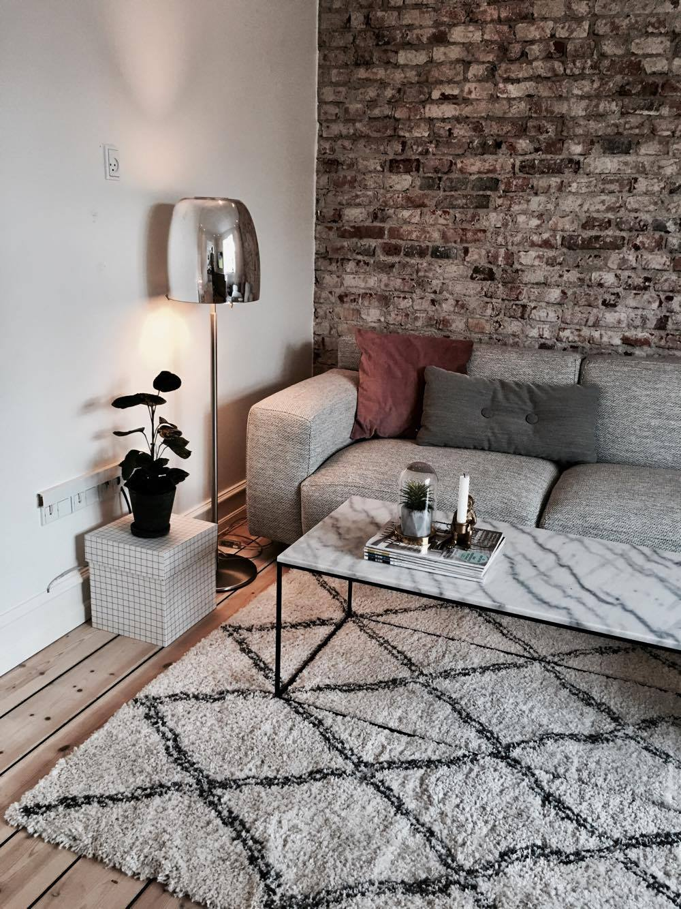
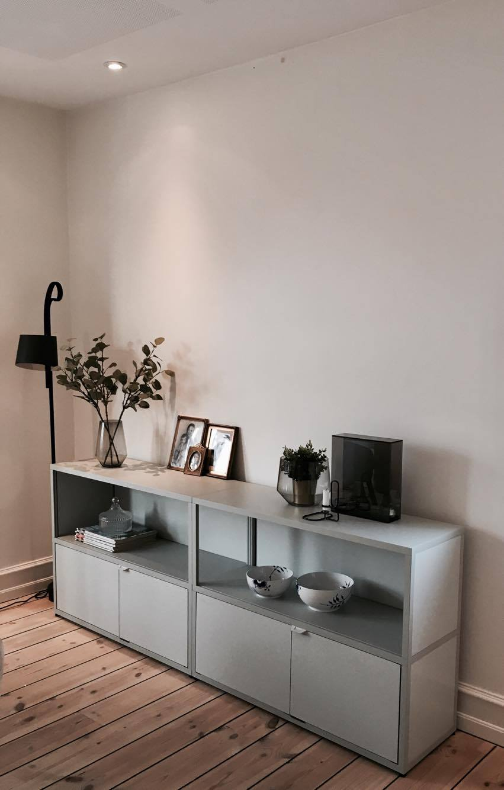
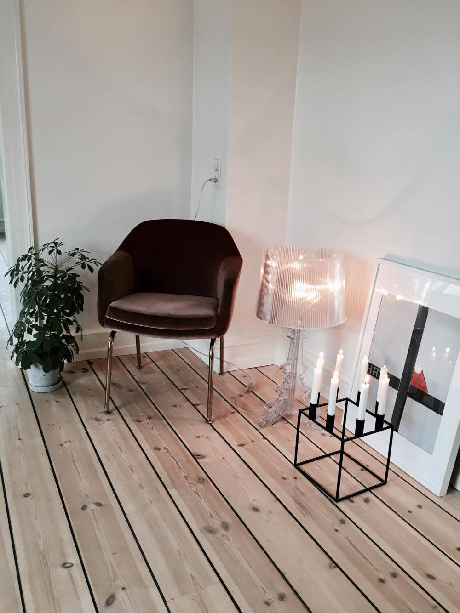
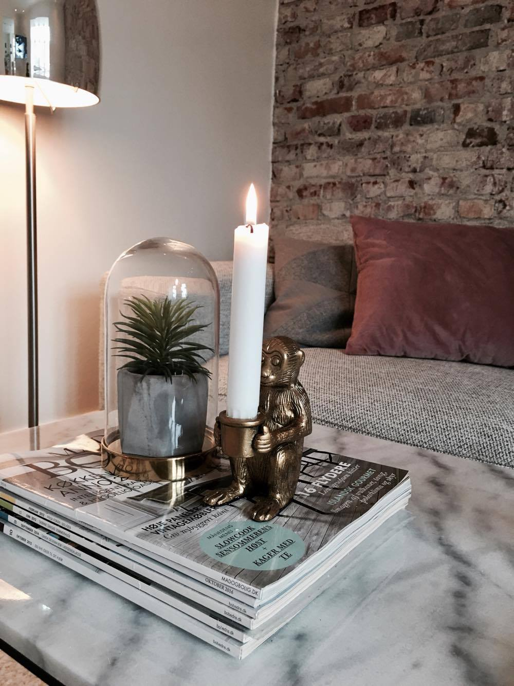
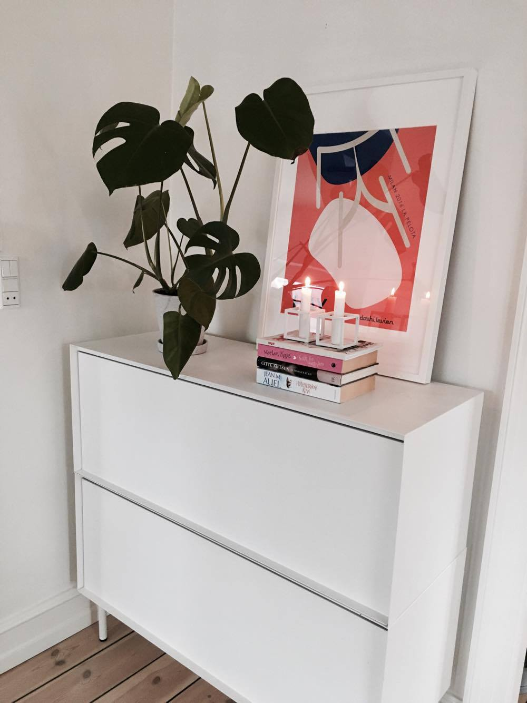
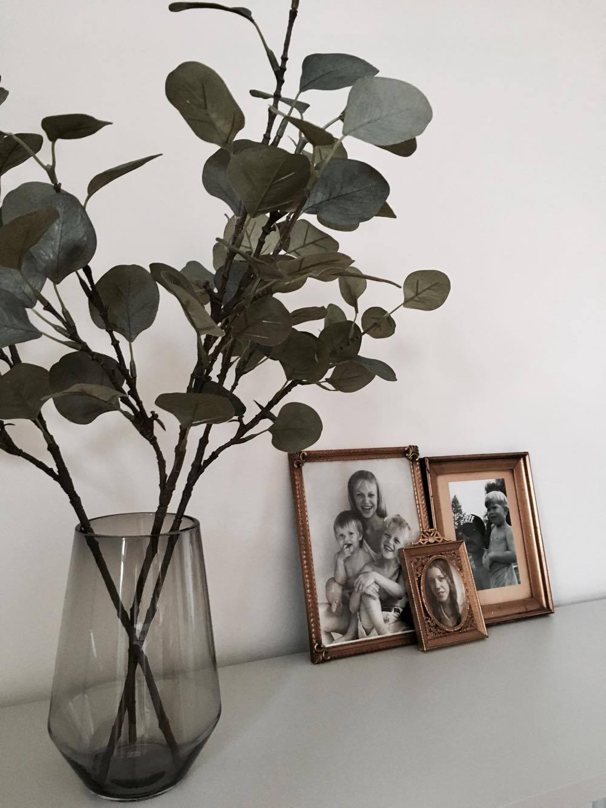

MY HOME
Selv om jeg er på SU og har en stram økonomi, så stopper det mig ikke, for at skabe et lækkert hjem!
Fortid
Jeg har altid gået rigtig meget op i indretning, bolig og mode. Da jeg var en ung pige, som boede hjemme, havde jeg et lille værelse, men alligevel formodet jeg at lave om næsten 1 gang om måneden. Jeg var aldrig tilfreds, der skulle hele tiden ske noget nyt på mit værelse. Jeg fik altid overtalt min mor til, at jeg skulle ud og have nogle nye ting. Jeg fik endda formodet at køre Jylland rundt, fordi jeg absolut ville have en guld væg, og det fik jeg, men var jeg tilfreds? Nix.
Ny lejlighed
For ca. 2 måneder siden flyttede min kæreste og jeg ind i en ny lejlighed. Jeg har glædet mig utrolig meget til at indrette og købe nye ting til den nye lejlighed. Jeg havde endda indrettet hele lejligheden inde i mit hoved, inden vi overhovedet var flyttet ind eller havde sagt ja til lejligheden. Det betød også bare, at lejligheden var den rette for os.
Jeg vidste jeg skulle begynde i skole efter sommerferien, så jeg var godt klar over, at møbel budgettet ikke var så højt. Dog er jeg så heldig, at jeg arbejder inde i en lækker møbelforretning der hedder HAY. Jeg har dog været fast besluttet på, at det ikke skulle være et show room for HAY.
Jeg synes vores lejlighed er blevet så fin, dog er den ikke helt færdig endnu, men det bliver den vel aldrig, når man er mig ;-)
Jeg har formodet at finde en masse fine ting, som er købt til en god pris, en SU venlig pris.
Hvad jeg har gjort
Jeg forsøger lidt at køre den minimalistiske stil, men samtidig synes jeg det er vigtigt at få nogle varme farver ind og planter, som gør det lidt mere "levende". Derfor har jeg valgt at tilføje rosa farvede pudder i min sofa og rosa farvet stol. Pudderne er fra h&m til 49 kr og stolen er en vintage/genbrugs stol til 1000 kr.
Jeg har også valgt at tilføje guld farver, da jeg også synes det giver en varme og det passer til vores rustikke murstensvæg og rosa farvede pudder. Min lille lyststage abe, er også fra h&m til 69 kr og mine guldrammer er også gamle rammer som jeg har fundet hjemme ved min mor. Jeg elsker at være personlig i min indretning, derfor har jeg netop valgt gamle fotos. Det giver en dejlig ro, synes jeg.
Mit hjem i billeder






Jeg håber i kunne bruge min inspiration til noget!
XOXO Malou Jeppson